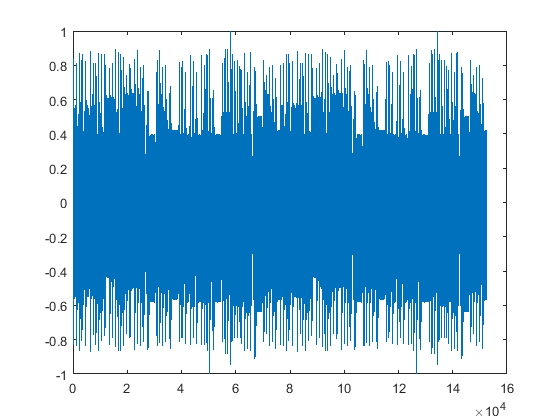

Contents
degiskenleri tanimla
Fs = 3192;
gecikme = round(Fs/10);
duraklama = zeros(1,round(Fs/100));
notalar = [];
duraklama = [];
oktav degis degeri
oktdegis=3;
notalar.txt yi okuma
dosya = fopen('notalar.txt','r');
[nota,oktav,olcu] = textread('notalar.txt','%s%d%s','delimiter',',');
fclose(dosya);
f = zeros(1,length(nota));
oktav degisebilir
if oktdegis~=0
for okt=1:length(oktav)
oktav(okt) = oktav(okt)+oktdegis;
end
end
notalar matrisi olu?umu
for i = 1:length(nota)
f(i) = frek(nota{i},oktav(i));
[sinwave,t] = note(f(i),str2num(olcu{i}));
notalar = [notalar sinwave duraklama];
end
echo desteği
for j=1:length(notalar)
if (j+gecikme) < length(notalar)
notalar(j+gecikme) = notalar(j+gecikme) + 0.3*notalar(j);
end
end
normalize etme
notalar = notalar /max(abs(notalar));
grafigi ciz
plot(notalar)

ses olarak cikti
sound(notalar,Fs)